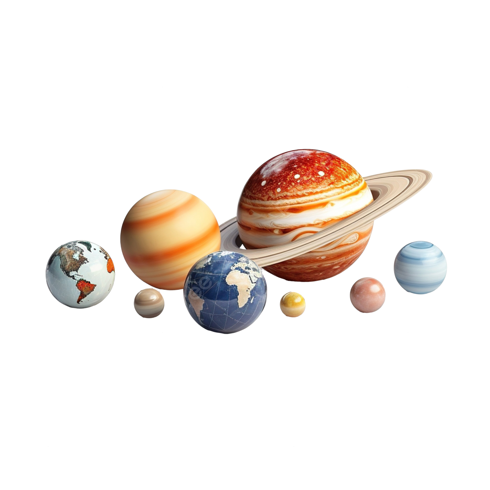

النظام الشمسي
تسجيل البيانات
النظام الشمسي
:الكواكب
عطارد
الزهرة
الأرض
المريخ
المشتري
زحل
أورانوس
نبتون
الكوكب
الترتيب
القطر (كم)
عطارد
1
4,880
الزهرة
2
12,104
الأرض
3
12,742
المريخ
4
6,779
المشتري
5
139,820
زحل
6
116,460
أورانوس
7
50,724
نبتون
8
49,244

لمزيد من المعلومات، يمكنك زيارة
النظام الشمسي على ويكيبيديا
.